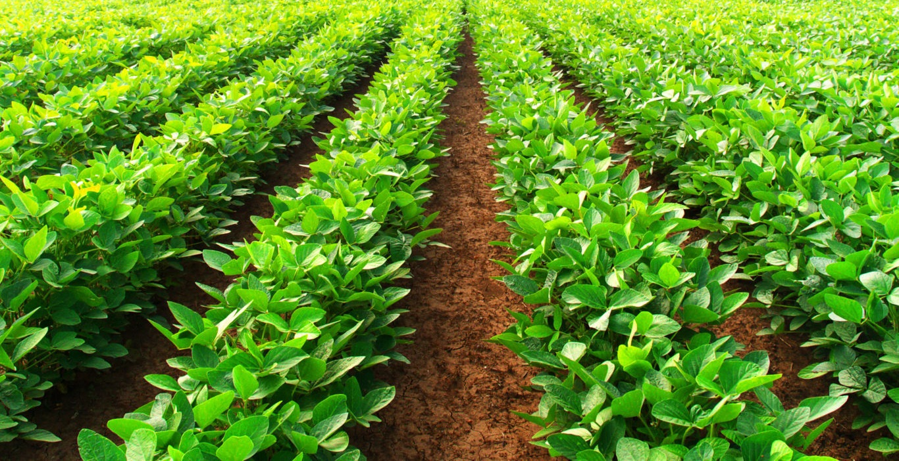

The Potato Plant Leaf Disease Diagnosis System is a tool designed to identify
and diagnose common diseases affecting potato plant leaves, such as Early Blight,
Late Blight, and healthy conditions. Utilizing advanced machine learning models,
like CNNs or ResNet, the system analyzes images of potato leaves to detect
disease symptoms accurately. It can be used via a web or mobile application,
where users upload images or capture them using a camera, and the model provides a
diagnosis along with recommendations for disease management. This system aids farmers
and agricultural professionals in making informed decisions
to ensure better crop health and yield.